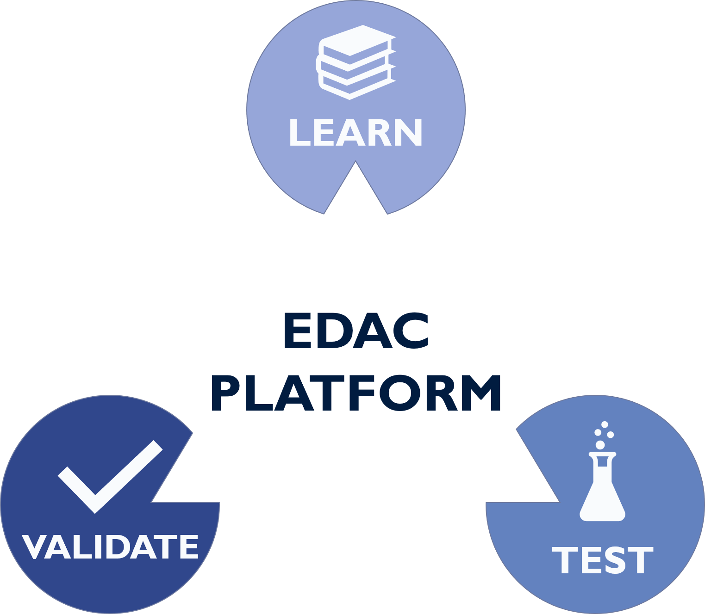
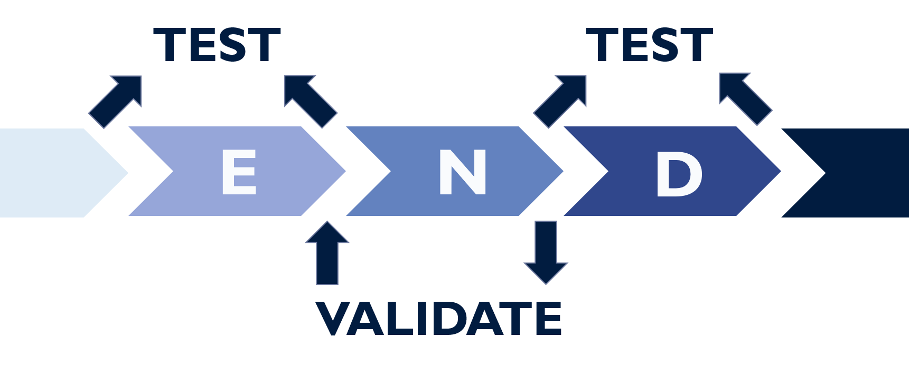

A Test and Validation Platform for EDAC

A Learning Program for Error Decoding and Correction
Intro
What is EDAC
In a nutshell:
A method that you can
- Detect Error
- Correct Error
to your data
EDAC workflow
- Encode -> encode your data with parities
- Noise -> noises to your data occurs
- Decode -> decode your data to identify errors and even correct them
What EDAC Systems do we have
If you want to learn EDACs
What can you do

Learn
How to decode, encode or correct your EDAC message.
Test
Your EDAC functions
Validate
Your EDAC implementations
Installations
Before you run
git clone https://github.com/N0Ball/EDAC.git
python3 -m pip install -r requirements
Web API
export FLASK_APP=server/web/server:app
flask run
Docs
make view-docs # Open a server to view documentation
make build-docs # Auto create docs from code
make deploy-docs # Create doc on github page